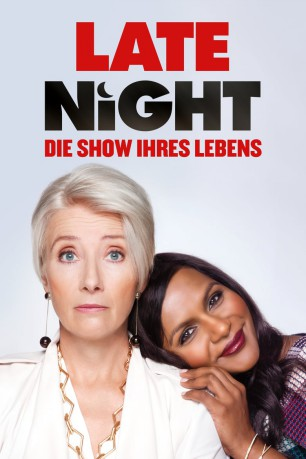
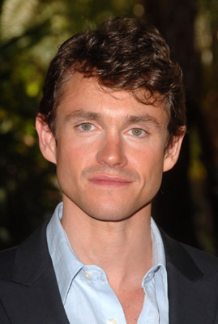
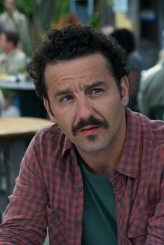
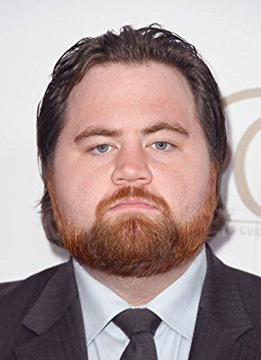
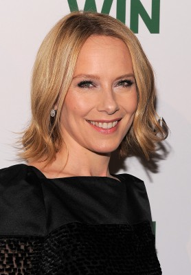
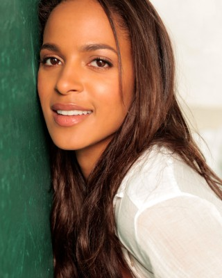
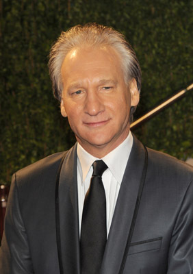
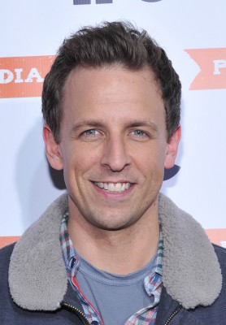
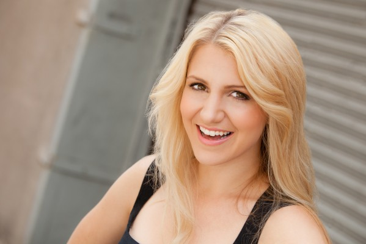
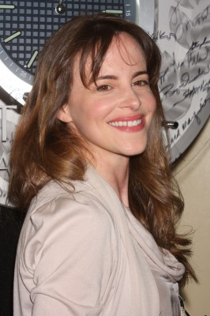

#12165 Late Night
 gesehen am 30.12.2019
gesehen am 30.12.2019
 
 IMDB-Wertung: 6.5 / 10
IMDB-Wertung: 6.5 / 10  Tomatometer: 80
Tomatometer: 80  Metascore: 70
Metascore: 70 
Katherine Newbury (Emma Thompson) ist eine legendäre TV-Talkerin. Als ihr eines Tages vorgeworfen wird, eine „Frau, die Frauen hasst“ zu sein, kommt ihr eine – zumindest vermeintlich – brillante Idee: Mit Molly (Mindy Kaling) soll eine Frau frischen Wind in ihr Autorenteam bringen, das sonst nur aus Männern besteht! Doch das kommt wohl zu spät, denn neben den immer weiter sinkenden Quoten sieht sich Katherine auch noch damit konfrontiert, dass der Sender sie ersetzen will. Doch dann erweist sich die Einstellung von Molly doch noch als totaler Glücksgriff: Diese will nämlich beweisen, dass sie nicht nur ein Marketing-Stunt ist, um den Ruf der Moderatorin zu retten, und setzt alles daran, die schlecht laufende Show und gleichzeitig Katherines Karriere zu retten. Doch mit ihrem Bemühungen könnte sie noch etwas viel Bedeutenderes erreichen…
Jahr: 2019
Dauer: 101 Minuten
FSK: 0
Land: USA Studio: Amazon StudiosTonspuren: DTS - ,
Untertitel: Deutsch,
Auflösung: 1080p (1920x1040) Größe: 5539 MB
Genre: Drama, Komödie
Regisseur: Nisha Ganatra
Drehbuch: Mindy Kaling
Soundtrack: Lesley Barber
Darsteller:
 Emma Thompson als Katherine Newbury
Emma Thompson als Katherine Newbury Mindy Kaling als Molly Patel
Mindy Kaling als Molly Patel John Lithgow als Walter Lovell
John Lithgow als Walter Lovell-  Hugh Dancy als Charlie Fain
- Reid Scott als Tom Campbell
 Denis O'Hare als Brad
Denis O'Hare als Brad-  Max Casella als Burditt
-  Paul Walter Hauser als Mancuso
 John Early als Reynolds
John Early als Reynolds- Jia Patel als Pavarti
- Luke Slattery als Hayes Campbell
 Ike Barinholtz als Daniel Tennant
Ike Barinholtz als Daniel Tennant- Marc Kudisch als Billy Kastner
-  Amy Ryan als Caroline Morton
-  Megalyn Echikunwoke als Robin
- Blake DeLong als McCary
-  Bill Maher als Bill Maher
-  Seth Meyers als Seth Meyers
-  Annaleigh Ashford als Mimi Mismatch
- Halston Sage als Zoe Martlin
- David Neal Levin als Plant Manager
-  Maria Dizzia als Joan
- Paige Gilbert als Dee
- Cleo Gray als Joyce
 Kerry Flanagan als Female Reporter
Kerry Flanagan als Female Reporter- Rupak Ginn als Teacher
- Hank Lin als Young Guy on the Street
- Jake Tapper als Jake Tapper
- Sophie Zucker als Receptionist
- Monroe Martin III als Brandon
 Sakina Jaffrey als Molly's Mom
Sakina Jaffrey als Molly's Mom- Diane Dehn als Writer's assistant (uncredited)
- Jordan Ashley Anne Demeusy als Caroline's Daughter (uncredited)
- Nick Denning als #6 (uncredited)
- Faith Logan als British Comedy Club Patron (uncredited)
 Doris McCarthy als Audience Member (uncredited)
Doris McCarthy als Audience Member (uncredited)- Vin Scialla als Bandleader (uncredited)
- Lucas Caleb Rooney als Gabe Eichler
- Jadon Woodard als Avery
- Glo Tavarez als Young Woman
- Joe Exley als Band Member (uncredited)
- Gregory Mikell als The Boss (uncredited)
Datei: X:\2019(G-M)\Late Night (2019, FSK0, 1920x1040).mkv seit 30.12.2019
Festplatte: HD 2018(G-Z)-2019(A-Z)
 Es gibt insgesamt 47 Filme in der Gruppe '2019(G-M)'
Es gibt insgesamt 47 Filme in der Gruppe '2019(G-M)'